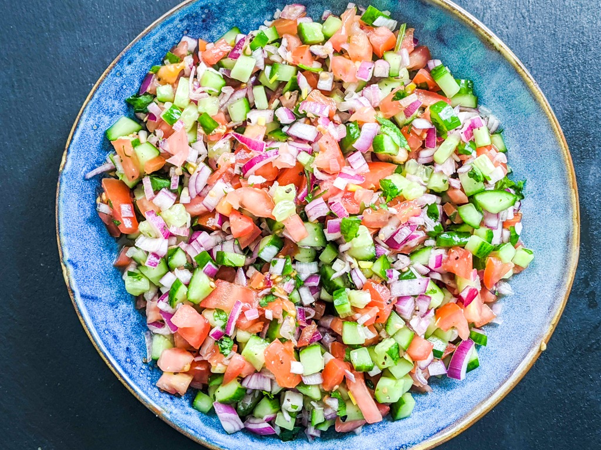

Shirazi Salad

What is it?
A tasty Persian salad which originated in the town of Shiraz in Southern Iran. Almost always served as a side dish, it's crunchy, bright, refreshing with a mild citrus-flavo
What you need:
Salad:
- 4 Medium firm Roma tomato's, diced
- 1 Medium English Cucumber, diced
- 1/2 Cup diced red onion
- 1 tbs chopped fresh cilantro
- 1 tbs dried mint
Dressing:
- 1/4 cup freshly squeezed lime juice
- 3 tbs extra-virgin olive oil
- 1/2 tsp salt
- 1/2 tsp ground black pepper
- 1/4 tsp sumac (optional)
- 1 sprig fresh mint (optional)
Directions
- Combine all ingredients from Salad list
- Let sit in refrigerator for at least 30 min
- Whisk together all Dressing ingredients
- Drizzle dressing over salad and toss well